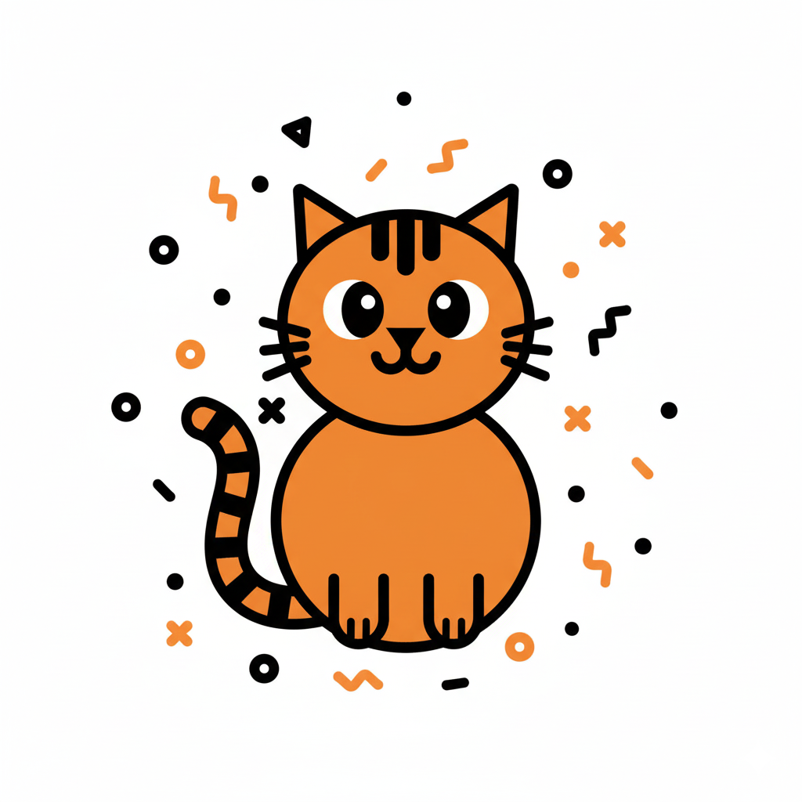

What is an Agent : Core
Q: LLMs can only predict next
token
. How can do actions?
A: Control tokens
<s>
[AVAILABLE_TOOLS]
[{"type": "function", "function": {"name": "calculator", "description": "Performs mathematical calculations", "parameters": {"type": "object", "properties": {"operation": {"type": "string", "description": "The operation to be done in python format."}}, "required": ["operation"]}}}]
[/AVAILABLE_TOOLS]
[INST]
What's 2+2?
[/INST]
[TOOL_CALLS]
[{"name": "calculator", "arguments": {"operation": "2+2"}}]
</s>
[TOOL_RESULTS]
[{"name": "calculator", "content": 4}]
[/TOOL_RESULTS]
2+2=4
</s>

English
cat
Chinese
猫
GPT-4o
[8837]